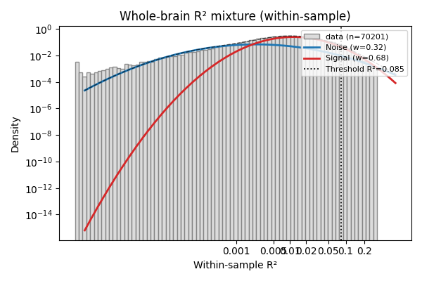
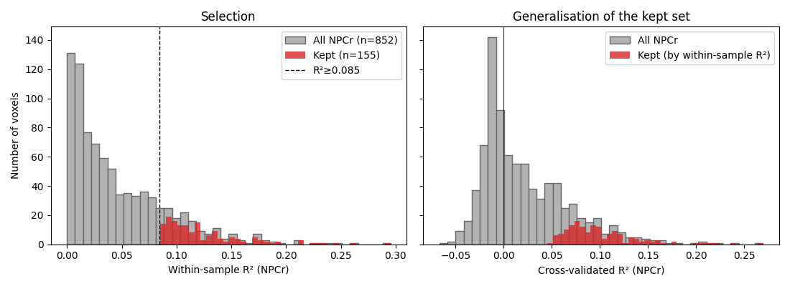

Note
Go to the end to download the full example code.
Voxel selection via a 2-component R² mixture model¶
When you fit an encoding model to whole-brain fMRI data, most voxels are genuinely noise — they don’t tune to the stimulus dimension you’re modelling. Almost every downstream analysis (decoding, Fisher information, expected uncertainty) needs a way to select voxels that actually carry signal, without hand-picking an arbitrary R² cutoff.
A simple data-driven approach is to fit a 2-component Gaussian mixture
on logit(R²). One component captures the bulk of noise voxels, the
other the tail of well-tuned voxels. From the fitted mixture you can
derive a threshold in several ways:
Posterior-based — keep voxels with \(P(\text{signal} \mid r^2) \ge p\). Smooth, but the effective cap depends on how separable the two components are.
Tail-FDR — keep voxels where the false-discovery rate of the noise component crossing the threshold is below \(\alpha\). Classical, works cleanly when the two modes are well separated.
Noise-tail quantile — keep voxels with R² above the noise component’s \(\mu_n + k\sigma_n\) on the logit scale. A conservative “R² unlikely under noise alone” criterion that produces selective masks even when the two mixture modes overlap heavily.
This example walks through the three options on a real subject’s whole-brain within-sample R², then applies the chosen threshold inside the NPCr ROI to derive the voxel mask used by the rest of the pipeline.
The demo data is a small bundle (~4 MB) extracted from one subject of the numerosity fMRI dataset in Prat-Carrabin et al. (2025, bioRxiv 10.1101/2025.09.25.675916); it’s downloaded automatically on first run.
import matplotlib.pyplot as plt
import numpy as np
import pandas as pd
from braincoder.utils.data import load_pratcarrabin2025_npc
from braincoder.utils.stats import (
fit_r2_mixture,
r2_fdr_threshold,
r2_p_signal_threshold,
plot_r2_mixture,
)
Load the demo bundle¶
load_pratcarrabin2025_npc returns a dict with both whole-brain and
NPCr-only data. For voxel selection we use the whole-brain
within-sample R² — the fraction of variance the encoding model
explains on the data it was fit to. That quantity is bounded in
\([0, 1]\), so every brain voxel contributes to the mixture. CV-R²
is the right tool for reporting generalisation, but it can go
arbitrarily negative when a model overfits — and the mixture loses
half its data if you drop those voxels.
bundle = load_pratcarrabin2025_npc()
print('Subject:', bundle['manifest']['subject'])
r2_img = bundle['r2_wholebrain'] # nibabel Nifti1Image
brain_mask = bundle['brain_mask'] # nibabel Nifti1Image, T1w
r2_npcr = bundle['r2'] # NPCr-only R² (pd.Series)
cvr2_npcr = bundle['cv_r2'] # NPCr-only CV-R² (for sanity)
r2_wb = r2_img.get_fdata()
mask_wb = brain_mask.get_fdata().astype(bool)
r2_in_brain = r2_wb[mask_wb]
r2_in_brain = r2_in_brain[np.isfinite(r2_in_brain)]
print(f'In-brain voxels: {len(r2_in_brain):,}')
print(f' R²>0: {(r2_in_brain > 0).sum():,}')
print(f' R²>0.05: {(r2_in_brain > 0.05).sum():,}')
print(f' R²>0.10: {(r2_in_brain > 0.10).sum():,}')
Subject: sub-13
In-brain voxels: 72,438
R²>0: 70,201
R²>0.05: 5,537
R²>0.10: 1,133
Fit the mixture¶
fit_r2_mixture internally filters to 0 < R² < 0.99 and fits a
2-component Gaussian mixture on the logit-transformed values. The
return is a dictionary describing both components and the fit.
fit = fit_r2_mixture(r2_in_brain)
print(f"Noise: mean R²={fit['noise_mean_r2']:.4f}, "
f"weight={fit['noise_weight']:.2f}")
print(f"Signal: mean R²={fit['signal_mean_r2']:.4f}, "
f"weight={fit['signal_weight']:.2f}")
Noise: mean R²=0.0023, weight=0.32
Signal: mean R²=0.0117, weight=0.68
Derive thresholds¶
Compute thresholds three ways. For this dataset the signal mode isn’t strongly separated from noise, so the posterior-based threshold caps out somewhere around \(P \\approx 0.85\) and tail-FDR only converges at permissive \(\\alpha\). The noise-tail quantile still gives a useful selective cutoff in that regime.
post_thresholds = {
p: r2_p_signal_threshold(fit, p=p) for p in [0.5, 0.7, 0.8, 0.85]
}
fdr_thresholds = {
a: r2_fdr_threshold(fit, alpha=a) for a in [0.05, 0.10, 0.20]
}
# Noise-tail cutoff: invert logit at noise_mu + k*noise_sigma.
def _inv_logit(z):
return 1.0 / (1.0 + np.exp(-z))
noise_tail_thresholds = {
k: _inv_logit(fit['noise_mu'] + k * fit['noise_sigma'])
for k in [1, 2, 3]
}
print('\nPosterior P(signal | R²) thresholds:')
for p, thr in post_thresholds.items():
txt = f'{thr:.4f}' if np.isfinite(thr) else '∞ (degenerate)'
print(f' P≥{p:.2f} → R² ≥ {txt}')
print('\nTail-FDR thresholds:')
for a, thr in fdr_thresholds.items():
txt = f'{thr:.4f}' if np.isfinite(thr) else '∞ (degenerate)'
print(f' α={a:.2f} → R² ≥ {txt}')
print('\nNoise-tail (R² unlikely under noise component):')
for k, thr in noise_tail_thresholds.items():
print(f' μ_n + {k}σ_n → R² ≥ {thr:.4f}')
# We use the **noise μ + 2σ** cutoff as the operating point. On the
# logit scale that's roughly the 97.5th percentile of the noise
# component — i.e. an R² above this is unlikely to come from a
# pure-noise voxel.
threshold = noise_tail_thresholds[2]
print(f'\nChosen threshold (noise μ+2σ): R² ≥ {threshold:.4f}')
Posterior P(signal | R²) thresholds:
P≥0.50 → R² ≥ 0.0020
P≥0.70 → R² ≥ 0.0040
P≥0.80 → R² ≥ 0.0073
P≥0.85 → R² ≥ 0.0134
Tail-FDR thresholds:
α=0.05 → R² ≥ ∞ (degenerate)
α=0.10 → R² ≥ ∞ (degenerate)
α=0.20 → R² ≥ 0.0023
Noise-tail (R² unlikely under noise component):
μ_n + 1σ_n → R² ≥ 0.0145
μ_n + 2σ_n → R² ≥ 0.0847
μ_n + 3σ_n → R² ≥ 0.3674
Chosen threshold (noise μ+2σ): R² ≥ 0.0847
Diagnostic plot¶
plot_r2_mixture overlays the histogram of logit(R²), the two
fitted component densities, and the chosen threshold (x-ticks are
labelled on the raw R² scale).
fig = plot_r2_mixture(fit, r2=r2_in_brain, threshold=threshold,
title='Whole-brain R² mixture (within-sample)')
fig.axes[0].set_xlabel('Within-sample R²')
plt.tight_layout()
plt.show()

Apply the threshold inside NPCr¶
The threshold was learned on the whole brain (where there are plenty of genuine-noise voxels to anchor the noise component). We then apply it to the NPCr within-sample R² to derive the voxel mask used by the decoder and uncertainty notebooks. The kept voxels are the ones whose tuning curves the encoding model was able to explain; their CV-R² (right-hand plot) shows how that signal transfers to unseen trials.
n_npcr = len(r2_npcr)
keep = r2_npcr > threshold
print(f'NPCr voxels: {n_npcr}, passing threshold: {int(keep.sum())} '
f'({100 * keep.mean():.1f}%)')
fig, axes = plt.subplots(1, 2, figsize=(11, 4), sharey=True)
ax = axes[0]
ax.hist(r2_npcr, bins=40, color='0.7', edgecolor='0.4',
label=f'All NPCr (n={n_npcr})')
ax.hist(r2_npcr[keep], bins=40, color='#d62728', alpha=0.8,
label=f'Kept (n={int(keep.sum())})')
ax.axvline(threshold, color='k', ls='--', lw=1,
label=f'R²≥{threshold:.3f}')
ax.set_xlabel('Within-sample R² (NPCr)')
ax.set_ylabel('Number of voxels')
ax.set_title('Selection')
ax.legend()
ax = axes[1]
ax.hist(cvr2_npcr, bins=40, color='0.7', edgecolor='0.4',
label='All NPCr')
ax.hist(cvr2_npcr[keep], bins=40, color='#d62728', alpha=0.8,
label='Kept (by within-sample R²)')
ax.axvline(0, color='k', lw=0.6)
ax.set_xlabel('Cross-validated R² (NPCr)')
ax.set_title('Generalisation of the kept set')
ax.legend()
plt.tight_layout()
plt.show()

NPCr voxels: 852, passing threshold: 155 (18.2%)
Save the mask for the next notebook¶
The decoder and expected-uncertainty examples both start from this same mask. We don’t actually persist it here — they refit the mixture for self-contained reproducibility — but in your own pipeline you’d typically pickle / write a TSV with the selected voxel ids:
keep_ids = cvr2_npcr.index[keep]
pd.Series(keep_ids).to_csv('selected_voxels.tsv', index=False)
Total running time of the script: (0 minutes 1.229 seconds)